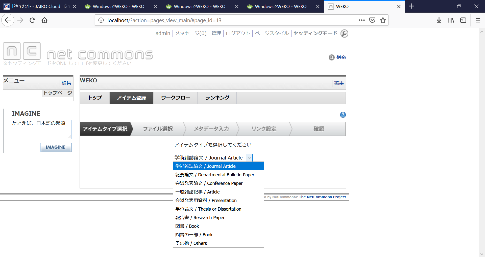
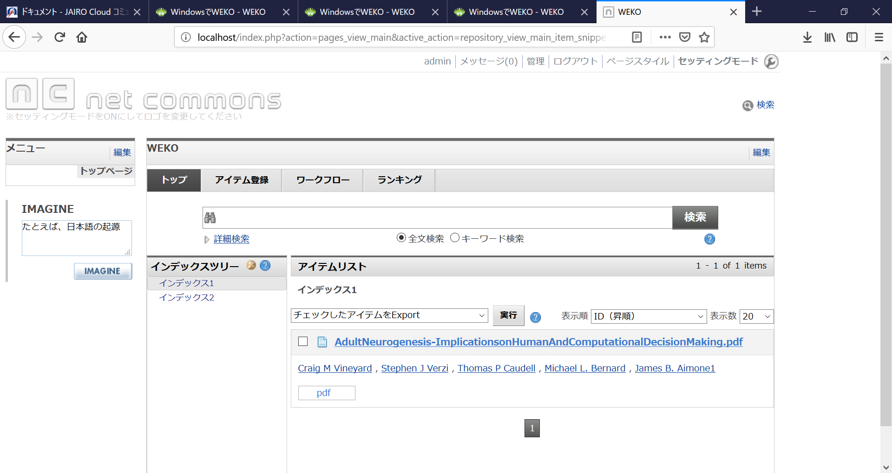

ディスカバリーサービス作成パッケージについて
こんにちは。Klisアドベントカレンダー8日目です。
Klisアドベントカレンダーを読むのは好きでたまに2014あたりを遡って読んだりしてるのですが、投稿は初めてになります。
klis2年生以上の人はすでに知っていて一年生も聞いていると思うのですが、2年生春ABの必修にCJE-1という演習があります。
Ruby+SQLでOPACを作る授業です。(来年辺りからpythonになるとの噂)
この授業は卒業要件＋司書資格要件なのでどの専攻に進むか関係なく受ける授業です。
逃げようがありません。
「OPACの内側はこうなってるのかー」と知ることができる良い授業なのですが、実はOPACはもう少し簡単に作る方法があります。
どういうことかというとオープンソースのディスカバリーサービス作成パッケージが存在します。
OPACは主に図書のデータを扱いますが、論文とかまでひっくるめて横断検索できる代物をディスカバリーサービスと呼んだりします。
というわけでディスカバリーサービス作成パッケージのJairoCroudとWEKOの紹介です。
まずはJairoCroudeについてです。
いったいなんだという感じですが、NII(国立情報学研究所)が作成している「機関リポジトリ環境提供サービス」です。
公式ページはこちら＞ https://community.repo.nii.ac.jp/
このページのドキュメントの項を見ればわかると思うのですが、見覚えのある形式ですね。
筑波大学の機関リポジトリもこのシステムで作られているそうです。
使ってみたくなる気持ちはあるのですが、対象者は
です。
マニュアルには長々と承認を求めよ、営利目的で使うな、云々という話が続き軽い気持ちで使えるものではなさそうです。
それではWEKOについて。スワヒリ語でリポジトリの意味だそうです。
(スワヒリ語にちょうど良い対訳があるのでしょうか？Google先生は知らないそうです。第一なぜ、スワヒリ語なのか？謎はつきません。)
コチラはThe 2-Clause BSD License というライセンスの下、誰かに承認を求めることなく、扱えるようです。
というわけで、実際に遊べるのはWEKOのほうです。
公式ホームページはこちら＞ http://weko.at.nii.ac.jp/
ご丁寧にトップページの下に[WindwosでWEKO]という項目があるのでその流れにそって作業していきます。
ファイルサイズが大きいのでインストールも解凍も時間がかかりますが、根気よく待ちます。レポートでも書くか、小説でも読んで待ちましょう。
インストールが終了したら説明通りにxammp.exeを起動し、apachとmysqlを起動して、http://localhost/nc2/htdocs/ にアクセスすると何もデータが登録されていないカラのディスカバリーサービスが出てきます。
このとき、アクセスしているアドレスは自分のPCの機能を見ているのでネットワークから外れていても使えます。
初期IDとPWでログインして「アイテム登録」を選ぶと以下のような画面が出てきます。図書以外にも学術論文とか、報告書とかいろんな項目があります。
ここでたとえば、「学術論文」を選んでファイルを登録しメタデータを登録すれば、登録されます。こんな感じです。
この作業中に目に入る論文の状態(acceptedかaccept待ちかの属性を指定、変更できる)とかは研究機関が使う場合、非常にありがたい機能ですが詳しいことは割愛します。
実はディスカバリーサービスを使ってみようと思ったのは理由があります。
授業関係のプリント、論文、図書館で借りた本があまりにも管理できないのでどうにか管理できないかと思って手を出しました。
ただし、思った以上にメタデータ登録が面倒そうなことと、整理したといって物が減るわけではないことに気付いて使うか迷っています。
来年、CJE-1を受講する方はこれを上手く使えると楽かもしれません。
が、単位の保証はしません。あしからず。
（過去にRuby on Railsで組んだ例はあったようなのでフレームワーク使用禁止ではないようです。
本当に扱いたければ先生に聞いてみるべきだと思います。）
長々と駄文にお付き合いいただきありがとうございました。明日の記事はTakehiko_Shikeさんです。